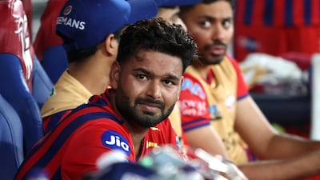
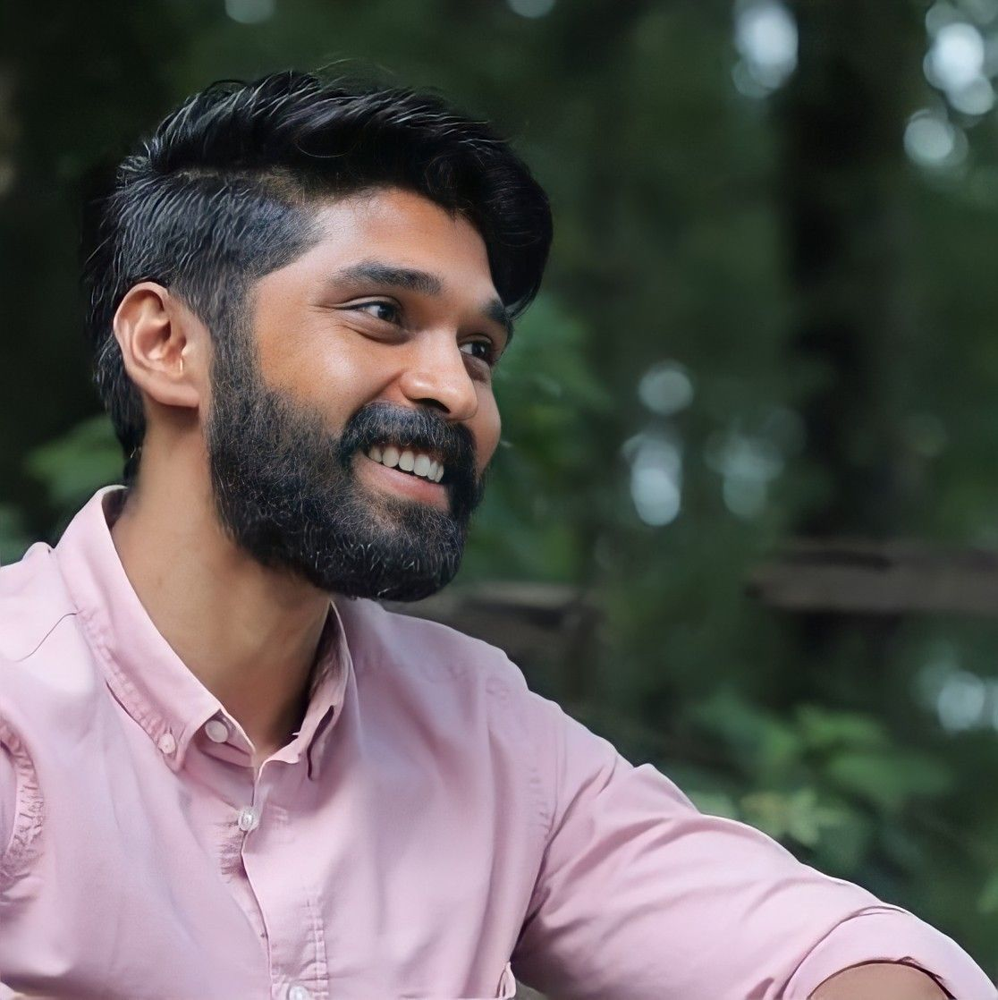

JAY
ACTOR
Jaikanth (6 April 1984), known as Jai, is an Indian actor and musician working in Tamil films. The nephew of noted composer Deva and the cousin of music director Srikanth Deva.
Facebook Instagram LinkedIn
RISHAB RAVENDRA PANT
ALL ROUNDER IN CRICKET
Rishabh Rajendra Pant is an Indian international cricketer and wicket-keeper batter, known for his aggressive strokeplay and match-winning .
Facebook Instagram LinkedIn
JADEJA
CRICKETERp>
Ravindra Jadeja, born on December 6, 1988, in Navagam-Khed, Gujarat, is an Indian cricketer known for his all-round capabilities. He is a left-handed batsman .
Facebook Instagram LinkedIn
DRU VIKRAN
ACTOR
Dhruv Vikram is an Indian actor, singer, and lyricist known for his work in Tamil cinema. Son of actor Vikram, he debuted in the 2019 remake Adithya Varma.
Facebook Instagram LinkedIn